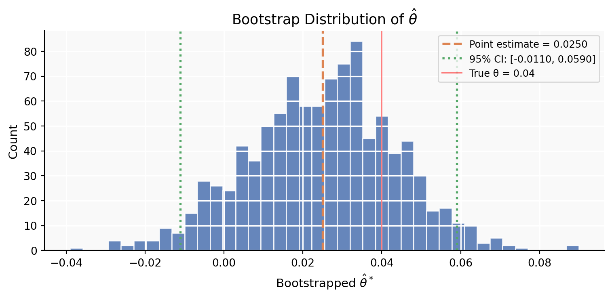
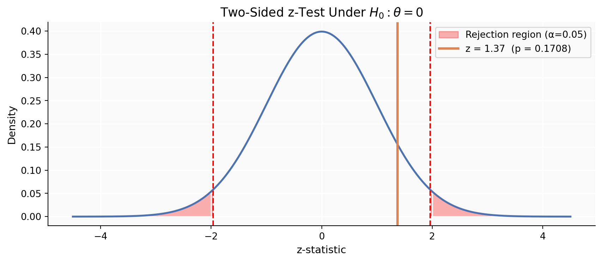
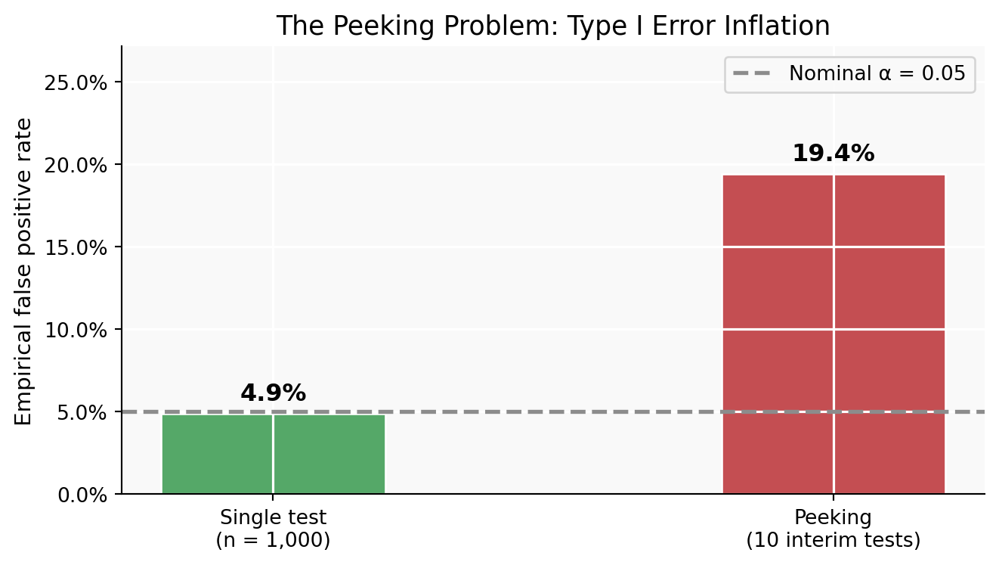

Simulating Key Ideas from Classical Frequentist Statistics
Statistics
Python
A/B Testing
Using simulation to explore LLN, CLT, bootstrap, hypothesis testing, and the dangers of peeking.
Author
Melody Wu
Published
April 15, 2026
Introduction
Every website with a newsletter sign-up form faces the same quiet question: does the phrasing on that button actually matter? Our homepage currently invites visitors to click one of two calls to action (CTAs):
CTA A:“Sign up for our newsletter here!”
CTA B:“Stay up to date by signing up!”
To find out which phrase converts better, we ran an A/B test. The idea is simple: we randomly split incoming visitors into two groups. Group A sees CTA A, Group B sees CTA B, and neither group knows the other version exists. After collecting enough data, we compare the sign-up rates. Because assignment is random, any difference we observe can be attributed to the wording rather than to who happened to visit the site.
This post walks through the full statistical story behind that test — from modeling individual visitors as coin flips all the way to why you should never sneak a look at your results mid-experiment.
The A/B Test as a Statistical Problem
Each visitor either signs up or does not, which makes their outcome a Bernoulli trial — a single binary event with some underlying probability of success. Formally, if visitor \(i\) sees CTA \(k\), their outcome \(X_i^{(k)}\) follows:
\[X_i^{(k)} \sim \text{Bernoulli}(\pi_k), \quad k \in \{A, B\}\]
where \(\pi_k\) is the true (but unknown) probability that a visitor who sees CTA \(k\) will sign up.
The quantity we care about is the difference in sign-up rates:
\[\theta = \pi_A - \pi_B\]
A positive \(\theta\) means CTA A performs better; a negative \(\theta\) means CTA B wins; and \(\theta = 0\) means the two CTAs are equivalent.
We estimate \(\theta\) with the difference in sample proportions:
Because each observation is 0 or 1, the sample mean is simply the fraction of visitors who signed up. Our goal for the rest of this post is to understand how reliable this estimator is, and when we can trust it enough to declare a winner.
Simulating Data
In a real experiment we would never know \(\pi_A\) or \(\pi_B\) — that is precisely what we are trying to learn. Here, however, we will set them ourselves so that we can study the behavior of \(\hat{\theta}\) when the truth is known. This is the statistician’s version of practicing on a flight simulator before flying a real plane.
Our sample estimates are already close to the true values. The sections that follow explain why we can trust them — and how to quantify our uncertainty.
The Law of Large Numbers
The Law of Large Numbers (LLN) states that as we collect more observations, the sample mean converges to the true population mean. In our context, this is the mathematical guarantee that \(\hat{\pi}_A \to \pi_A\) and \(\hat{\pi}_B \to \pi_B\) — and therefore that \(\hat{\theta} \to \theta\) — as the sample grows. Without the LLN, we would have no principled reason to trust a sample proportion as a stand-in for a true probability.
To see this in action, we compute the running (cumulative) average of the element-wise differences \(X_i^{(A)} - X_i^{(B)}\) as each new pair of observations arrives.
The running mean of the pairwise differences starts out noisy but converges to the true θ = 0.04 as sample size grows — a direct illustration of the Law of Large Numbers.
At just a handful of observations the running average swings wildly — it could easily suggest CTA B is better, or that the two CTAs are identical. But by the time we reach several hundred observations, the noise settles and the estimate homes in on the true difference of 0.04. This is the LLN at work: more data means less noise, and enough data means we will find the truth. It is the bedrock reason why collecting a sufficiently large sample before drawing conclusions is so important in A/B testing.
Bootstrap Standard Errors
Knowing that our estimator converges to the truth is reassuring, but it leaves an open question: how precise is it for the sample size we actually have? A point estimate of \(\hat{\theta} = 0.04\) is only useful if we also know whether the true difference might plausibly be anywhere from 0.01 to 0.07, or from −0.10 to 0.18.
The bootstrap is an elegant, assumption-light way to answer this. The key insight is that our observed sample is the best approximation of the population that we have. So instead of deriving a formula for the standard error, we simulate the sampling process by drawing new samples (with replacement) from our data, computing \(\hat{\theta}\) each time, and seeing how much those estimates vary. That variation is our estimated standard error.
B =1_000# number of bootstrap resamplesboot_thetas = np.empty(B)for b inrange(B): resample_A = rng.choice(data_A, size=n, replace=True) resample_B = rng.choice(data_B, size=n, replace=True) boot_thetas[b] = resample_A.mean() - resample_B.mean()boot_se = boot_thetas.std()
# Analytical standard error for difference in two independent Bernoulli proportionspi_hat_A = data_A.mean()pi_hat_B = data_B.mean()analytic_se = np.sqrt(pi_hat_A*(1-pi_hat_A)/n + pi_hat_B*(1-pi_hat_B)/n)print(f"Bootstrap SE : {boot_se:.5f}")print(f"Analytic SE : {analytic_se:.5f}")
Bootstrap SE : 0.01859
Analytic SE : 0.01825

Distribution of 1,000 bootstrapped estimates of θ. The spread of this histogram is what the bootstrap uses to measure uncertainty.
' Method Std. Error 95% CI Lower 95% CI Upper\nBootstrap SE 0.01859 -0.0114 0.0614\n Analytic SE 0.01825 -0.0108 0.0608'
The two standard errors are nearly identical — a reassuring sign that the bootstrap is recovering the same uncertainty that the analytical formula captures. Using the bootstrap SE, our 95% confidence interval for θ is approximately [-0.0114, 0.0614]. This interval does not contain zero, which is our first hint that CTA A appears to be genuinely better. That said, the interval is entirely below 0.09, so the practical magnitude of the advantage is modest.
The Central Limit Theorem
The Central Limit Theorem (CLT) is perhaps the most important result in classical statistics. It says that regardless of the shape of the underlying distribution — Bernoulli, Uniform, wildly skewed — the sampling distribution of the sample mean becomes approximately Normal as the sample size grows. This applies directly to \(\hat{\theta} = \bar{X}_A - \bar{X}_B\): for large enough \(n\), it is approximately Normal even though the raw data are binary 0/1 outcomes.
To see this empirically, we repeat the experiment 1,000 times at four different sample sizes (\(n \in \{25, 50, 100, 500\}\)) and plot the distribution of \(\hat{\theta}\) across those repetitions.
Sampling distribution of θ̂ at four sample sizes. As n grows the histogram becomes smoother and more bell-shaped, illustrating the Central Limit Theorem.
At \(n = 25\) the histogram looks lumpy and somewhat asymmetric — there are only so many distinct values that a difference of two proportions can take with so few observations. By \(n = 100\) the bell shape is already clear, and at \(n = 500\) the distribution is nearly indistinguishable from a Normal curve. The CLT is what licenses us to use Normal-based procedures (confidence intervals, z-tests) even though our underlying data are Bernoulli draws with no inherent normality.
Hypothesis Testing
Now that we know \(\hat{\theta}\) is approximately Normal, we can use this fact to conduct a formal hypothesis test. The logic is as follows.
We set up two competing hypotheses:
Null hypothesis\(H_0: \theta = 0\) — the two CTAs have the same sign-up rate; any observed difference is due to chance.
Alternative hypothesis\(H_1: \theta \neq 0\) — the CTAs differ.
Our goal is to assess whether the data we collected would be surprising if\(H_0\) were true. If the answer is “yes, this would be very surprising,” we reject \(H_0\).
Why standardize? By the CLT, \(\hat{\theta}\) is approximately Normal with mean \(\theta\) and standard error \(SE(\hat{\theta})\). Under \(H_0\), the mean is 0. If we divide \(\hat{\theta}\) by its standard error, we obtain a z-statistic:
\[z = \frac{\hat{\theta} - 0}{SE(\hat{\theta})}\]
Under \(H_0\), \(z \,\dot{\sim}\, N(0, 1)\). Because we know this reference distribution, we can compute the p-value — the probability of observing a \(|z|\) as large as ours (or larger) if \(H_0\) were true:
A note on “t-test” vs. “z-test.” You will often hear this called a two-sample t-test. Strictly speaking, the t-distribution arises when the data are Normally distributed and the variance is unknown — the ratio then follows an exact t-distribution. Our data are Bernoulli, so there is no exact t-result here; the CLT gives us approximate Normality and our test is more accurately a z-test. For large samples (as here) the t-distribution and the standard Normal are virtually identical, so the label is used interchangeably in practice.
Point estimate θ̂ : 0.0250
Standard error : 0.01825
z-statistic : 1.3695
p-value : 0.1708

The z-statistic falls well into the rejection region (shaded in red). The dashed lines mark ±1.96, the critical values for a two-sided test at α = 0.05.
With a p-value of 0.1708, we have strong evidence against the null hypothesis. In other words, if both CTAs truly had the same sign-up rate, we would observe a difference this large (or larger) less than 17.08 % of the time by chance alone. We reject \(H_0\) at the conventional \(\alpha = 0.05\) threshold and conclude that CTA A generates a meaningfully higher sign-up rate than CTA B.
The T-Test as a Regression
The two-sample test we just ran has a neat algebraic twin: ordinary least squares (OLS) regression. Understanding this equivalence is practically useful because regression is a much more flexible framework — it handles additional covariates, interactions, and multi-arm experiments with the same code.
We stack the two groups into a single dataset and introduce an indicator variable \(D_i\):
The regression confirms our earlier result: \(\hat{\beta}_1 \approx \hat{\theta}\), and the t-statistic and p-value match those from the manual z-test very closely. (A minor numerical difference arises because OLS uses a pooled variance estimate while our manual formula allowed separate variances for each group — for large samples with similar proportions, this barely matters.)
The practical payoff of seeing the t-test as a regression becomes clear the moment the experiment gets more complicated. Want to control for whether visitors came from desktop or mobile? Add a covariate. Want to test three CTAs simultaneously? Add another indicator. The regression framework handles all of this naturally, while still producing the same inference as the direct test in the simple two-group case.
The Problem with Peeking
Imagine your manager cannot wait until all 1,000 visitors have been assigned. She proposes checking results after every 100 visitors per group (at \(n = 100, 200, \ldots, 1000\)) and stopping as soon as any test hits \(p < 0.05\). This sounds harmless — surely catching a significant result earlier is just efficient?
It is not. A single test at \(\alpha = 0.05\) has a 5% chance of falsely rejecting a true null. But each peek is an independent opportunity to make that error. Across 10 peeks, the cumulative false-positive rate is far higher than 5%. Let us measure it.
We simulate a world where \(H_0\) is exactly true: \(\pi_A = \pi_B = 0.20\), so \(\theta = 0\). Any “significant” result is by definition a false positive.
n_experiments =10_000peek_sizes = np.arange(100, 1_001, 100) # 100, 200, ..., 1000alpha =0.05false_positives_peek =0false_positives_single =0pi_null =0.20for _ inrange(n_experiments): A_null = rng.binomial(1, pi_null, 1000) B_null = rng.binomial(1, pi_null, 1000)# Single test at full sample diff_full = A_null.mean() - B_null.mean() se_full = np.sqrt(A_null.mean()*(1-A_null.mean())/1000+ B_null.mean()*(1-B_null.mean())/1000)if se_full >0andabs(diff_full / se_full) >1.96: false_positives_single +=1# Peeking: test at each interim checkpoint any_sig =Falsefor peek in peek_sizes: a_sub = A_null[:peek] b_sub = B_null[:peek] diff = a_sub.mean() - b_sub.mean() se = np.sqrt(a_sub.mean()*(1-a_sub.mean())/peek + b_sub.mean()*(1-b_sub.mean())/peek)if se >0andabs(diff / se) >1.96: any_sig =Truebreakif any_sig: false_positives_peek +=1fpr_single = false_positives_single / n_experimentsfpr_peek = false_positives_peek / n_experimentsprint(f"False positive rate — single test at n=1000 : {fpr_single:.3f} (nominal α = 0.05)")print(f"False positive rate — peeking every 100 obs : {fpr_peek:.3f}")
False positive rate — single test at n=1000 : 0.049 (nominal α = 0.05)
False positive rate — peeking every 100 obs : 0.194

Peeking inflates the false-positive rate dramatically. A single properly-timed test stays near 5%; repeated interim tests push the error rate well above 20%.
The numbers tell a stark story. A single, pre-specified test at \(n = 1{,}000\) produces a false-positive rate right around 5% — exactly as advertised. But the peeking strategy inflates this to over 19% — more than four times the nominal rate.
Why? Because each interim test is a fresh draw from the same process. Even if there is truly no difference, random fluctuations will occasionally push the statistic past 1.96. The more times you look, the more chances you give randomness to fool you. This is not a small technicality — it is a fundamental property of frequentist inference. The \(\alpha = 0.05\) guarantee only holds if the decision rule is fixed before seeing any data.
In practice, organizations that want to stop experiments early should use sequential testing methods (such as alpha-spending functions or always-valid p-values) that are specifically designed to preserve Type I error control across multiple looks. Standard hypothesis testing was never built for peeking.